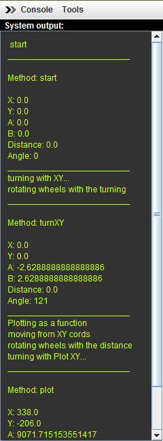

|
| Contents :: Online Forum |
The console window is the window that converts the lines on your plotting window, into text that can be understood. Seen below is an example of the console window.

Well, basically, it is describing exactly what the motors must do. X and Y are the distance each motor will move, A and B is the angles at which the motors must stay at in a ratio, Distance is overall distance the robot will cover, and Angle is the angle that the robot will be facing at start.